library(patchwork)
library(mcmcplots)
library(ggmcmc)
library(tidybayes)
library(tmap)
tmap_mode("plot")
library(terra)
library(sf)
sf::sf_use_s2(FALSE)
library(tidyverse)
# options
options(scipen = 999)Herpailurus yagouaroundi Model Outputs
Model outputs for Herpailurus yagouaroundi.
- R Libraries
- Basemaps
equalareaCRS <- '+proj=laea +lon_0=-73.125 +lat_0=0 +datum=WGS84 +units=m +no_defs'
Latam_projected <- st_read('data/Latam_vector.shp', quiet = T)
Latam_countries <- sf::st_read('data/Latam_vector_countries.shp', quiet = T) %>% sf::st_transform(crs=equalareaCRS)
Latam <- st_union(st_make_valid(Latam_projected))
Latam_no_islands <- bind_rows(list(Latam_countries %>%
filter(type!='Indeterminate' & type!='Dependency' & type!='Lease') %>%
mutate(iso_a2=ifelse(name_en=='France', 'GF', iso_a2)) %>%
mutate(name_en=ifelse(name_en=='France', 'French Guiana', name_en)) %>%
filter(!iso_a2 %in% c('EC','SX', 'NL', 'HT', 'DO', 'CU', 'CW', 'AW','BS',
'TT', 'GD', 'VC', 'BB', 'LC', 'DM', 'AG', 'KN', 'JM')),
Latam_countries %>%
filter(name=='Ecuador') %>%
st_cast('POLYGON', quiet=T) %>%
mutate(area=st_area(.)) %>% arrange(desc(area)) %>%
head(n=1) %>% dplyr::select(-area))) %>% st_union()
hyagouaroundi_IUCN <- sf::st_read('big_data/hyagouaroundi_IUCN.shp', quiet = T) %>% sf::st_transform(crs=equalareaCRS)
Latam.raster <- terra::rast('data/Latam_raster.tif')
Latam.raster.countries <- terra::rast('data/Latam_raster_countries.tif')- Species data and covariates
PA_time1 <- readRDS('data/data_hyagouaroundi_PA_time1.rds') %>%
filter(!is.na(env.bio_7) &!is.na(env.npp) &!is.na(env.bio_15) & !is.na(env.elev)) # remove NA's
PA_time2 <- readRDS('data/data_hyagouaroundi_PA_time2.rds') %>%
filter(!is.na(env.bio_7) &!is.na(env.npp) &!is.na(env.bio_15) & !is.na(env.elev)) # remove NA's
# Presence-only data
PO_time1 <- readRDS('data/data_hyagouaroundi_PO_time1.rds') %>%
filter(!is.na(env.bio_7) &!is.na(env.npp) &!is.na(env.bio_15) & !is.na(env.elev) & !is.na(acce) & !is.na(count)) # remove NA's
PO_time2 <- readRDS('data/data_hyagouaroundi_PO_time2.rds') %>%
filter(!is.na(env.bio_7) &!is.na(env.npp) &!is.na(env.bio_15) & !is.na(env.elev) & !is.na(acce) & !is.na(count)) # remove NA's
PA_time1_time2 <- rbind(PA_time1 %>% mutate(time=1), PA_time2 %>% mutate(time=2))
PO_time1_time2 <- rbind(PO_time1 %>% mutate(time=1), PO_time2 %>% mutate(time=2)) - Read model
fitted.model <- readRDS('big_data/hyagouaroundi_model.rds') # deleted after model output
# as.mcmc.rjags converts an rjags Object to an mcmc or mcmc.list Object.
fitted.model.mcmc <- mcmcplots::as.mcmc.rjags(fitted.model)Model diagnostics
The fitted.model is an object of class rjags.
Code
# labels for the linear predictor `b`
L.fitted.model.b <- plab("b",
list(Covariate = c('Intercept',
'env.bio_7',
'env.bio_15',
'env.npp',
'env.elev', sprintf('spline%i', 1:18)))) # changes with n.spl
# tibble object for the linear predictor `b` extracted from the rjags fitted model
fitted.model.ggs.b <- ggmcmc::ggs(fitted.model.mcmc,
par_labels = L.fitted.model.b,
family="^b\\[")
# diagnostics
ggmcmc::ggmcmc(fitted.model.ggs.b, file="docs/hyagouaroundi_model_diagnostics.pdf", param_page=3)Plotting histogramsPlotting density plotsPlotting traceplotsPlotting running meansPlotting comparison of partial and full chainPlotting autocorrelation plotsPlotting crosscorrelation plotPlotting Potential Scale Reduction FactorsPlotting shrinkage of Potential Scale Reduction FactorsPlotting Number of effective independent drawsPlotting Geweke DiagnosticPlotting caterpillar plotTime taken to generate the report: 28 seconds.Traceplot
Code
ggs_traceplot(fitted.model.ggs.b)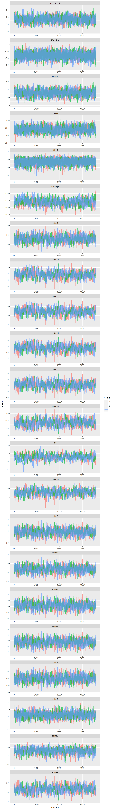
Rhat
Code
ggs_Rhat(fitted.model.ggs.b)Probability of occurrence of Herpailurus yagouaroundi
For each period: time1 and time2, and their difference (time2-time1)
Code
P.pred <- fitted.model$BUGSoutput$mean$P.pred
preds <- data.frame(PO_time1_time2, P.pred)
preds1 <- preds[preds$time == 1,]
preds2 <- preds[preds$time == 2,]
rast <- Latam.raster
rast[] <- NA
rast1 <- rast2 <- terra::rast(rast)
rast1[preds1$pixel] <- preds1$P.pred
rast2[preds2$pixel] <- preds2$P.pred
rast1 <- rast1 %>% terra::mask(., vect(Latam_no_islands))
rast2 <- rast2 %>% terra::mask(., vect(Latam_no_islands))
names(rast1) <- 'time1'
names(rast2) <- 'time2'
# Map of the of the probability of occurrence in the first period (time1: 2000-2013)
time1MAP <- tm_graticules(alpha = 0.3) +
tm_shape(rast1) +
tm_raster(palette = 'Reds', midpoint = NA, style= "cont") +
tm_shape(Latam_countries) +
tm_borders(col='grey60', alpha = 0.4) +
tm_layout(legend.outside = T, frame.lwd = 0.3, scale=1.2, legend.outside.size = 0.1)
# Map of the of the probability of occurrence in the second period (time2: 2014-2021)
time2MAP <- tm_graticules(alpha = 0.3) +
tm_shape(rast2) +
tm_raster(palette = 'Blues', midpoint = NA, style= "cont") +
tm_shape(Latam_countries) +
tm_borders(col='grey60', alpha = 0.4) +
tm_layout(legend.outside = T, frame.lwd = 0.3, scale=1.2, legend.outside.size = 0.1)
# Map of the of the change in the probability of occurrence (time2 - time1)
diffMAP <- tm_graticules(alpha = 0.3) +
tm_shape(rast2 - rast1) +
tm_raster(palette = 'PiYG', midpoint = 0, style= "cont", ) +
tm_shape(Latam_countries) +
tm_borders(col='grey60', alpha = 0.4) +
tm_layout(legend.outside = T, frame.lwd = 0.3, scale=1.2, legend.outside.size = 0.1)
time1MAP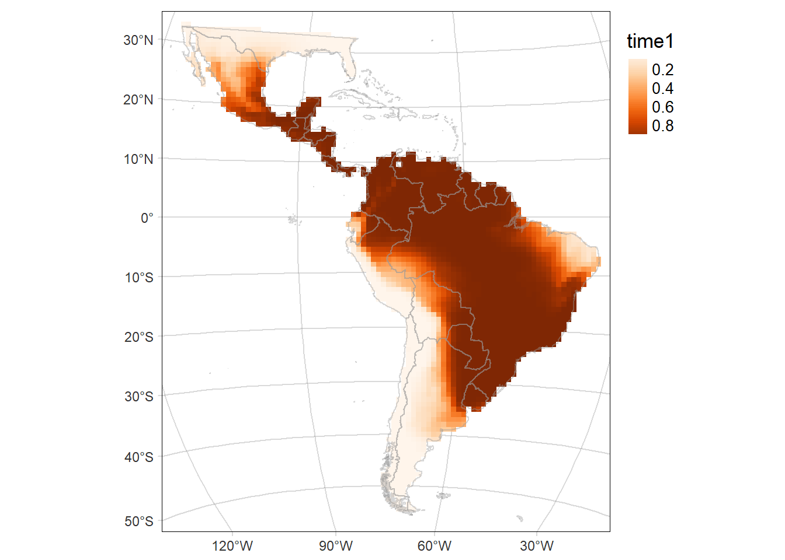
Code
time2MAP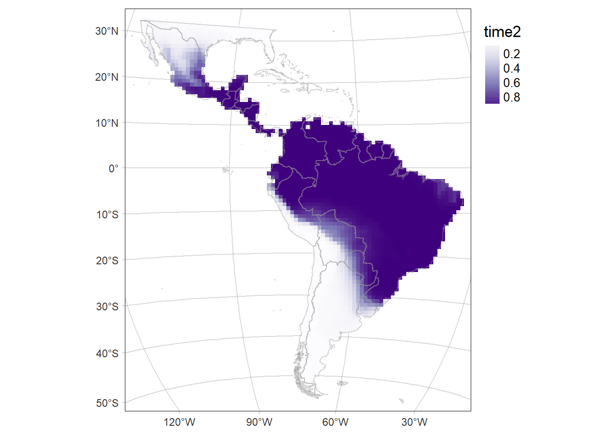
Code
diffMAP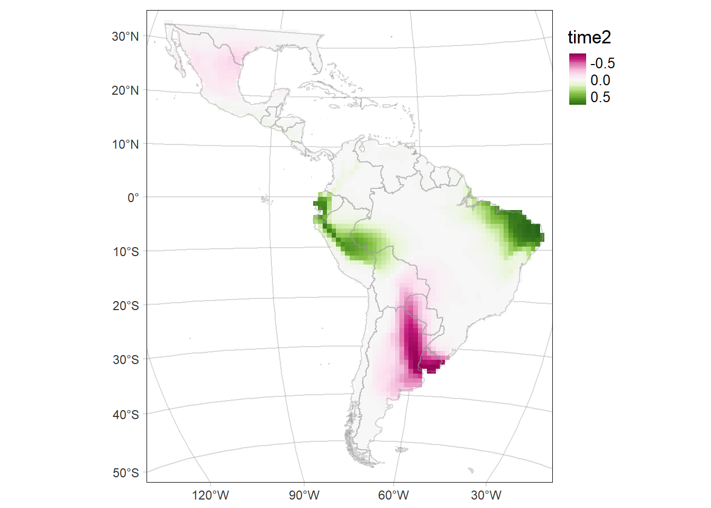
Standard deviation (SD) of the probability of occurrence of Herpailurus yagouaroundi
Code
P.pred.sd <- fitted.model$BUGSoutput$sd$P.pred
preds.sd <- data.frame(PO_time1_time2, P.pred.sd)
preds1.sd <- preds.sd[preds.sd$time == 1,]
preds2.sd <- preds.sd[preds.sd$time == 2,]
rast.sd <- terra::rast(Latam.raster)
rast.sd[] <- NA
rast1.sd <- rast2.sd <- terra::rast(rast.sd)
rast1.sd[preds1.sd$pixel] <- preds1.sd$P.pred.sd
rast2.sd[preds2.sd$pixel] <- preds2.sd$P.pred.sd
rast1.sd <- rast1.sd %>% terra::mask(., vect(Latam_no_islands))
rast2.sd <- rast2.sd %>% terra::mask(., vect(Latam_no_islands))
names(rast1.sd) <- 'time1.sd'
names(rast2.sd) <- 'time2.sd'
# Map of the SD of the probability of occurrence of the area time1
time1MAP.sd <- tm_graticules(alpha = 0.3) +
tm_shape(rast1.sd) +
tm_raster(palette = 'Reds', midpoint = NA, style= "cont") +
tm_shape(Latam_countries) +
tm_borders(alpha = 0.3) +
tm_layout(legend.outside = T, frame.lwd = 0.3, scale=1.2, legend.outside.size = 0.1)
# Map of the SD of the probability of occurrence of the area time2
time2MAP.sd <- tm_graticules(alpha = 0.3) +
tm_shape(rast2.sd) +
tm_raster(palette = 'Blues', midpoint = NA, style= "cont") +
tm_shape(Latam_countries) +
tm_borders(alpha = 0.3) +
tm_layout(legend.outside = T, frame.lwd = 0.3, scale=1.2, legend.outside.size = 0.1)
time1MAP.sdCode
time2MAP.sdBivariate map
Map of the difference including the Standard deviation (SD) of the probability of occurrence as the transparency of the layer.
Code
library(cols4all)
library(pals)
library(classInt)
library(stars)
bivcol = function(pal, nx = 3, ny = 3){
tit = substitute(pal)
if (is.function(pal))
pal = pal()
ncol = length(pal)
if (missing(nx))
nx = sqrt(ncol)
if (missing(ny))
ny = nx
image(matrix(1:ncol, nrow = ny), axes = FALSE, col = pal, asp = 1)
mtext(tit)
}
hyagouaroundi.pal.pu_gn_bivd <- c4a("pu_gn_bivd", n=3, m=5)
hyagouaroundi.pal <- c(t(apply(hyagouaroundi.pal.pu_gn_bivd, 2, rev)))
###
pred.P.sd <- fitted.model$BUGSoutput$sd$delta.Grid
preds.sd <- data.frame(PO_time1_time2, pred.P.sd=rep(pred.P.sd, 2))
rast.sd <- terra::rast(Latam.raster)
rast.sd[] <- NA
rast.sd <- terra::rast(rast.sd)
rast.sd[preds.sd$pixel] <- preds.sd$pred.P.sd
rast.sd <- rast.sd %>% terra::mask(., vect(Latam_no_islands))
names(rast.sd) <- c('diff')
# Map of the SD of the probability of occurrence of the area time2
delta.GridMAP.sd <- tm_graticules(alpha = 0.3) +
tm_shape(rast.sd) +
tm_raster(palette = 'Greys', midpoint = NA, style= "cont") +
tm_shape(Latam_countries) +
tm_borders(alpha = 0.3) +
tm_layout(legend.outside = T, frame.lwd = 0.3, scale=1.2, legend.outside.size = 0.1)
delta.GridMAP.sd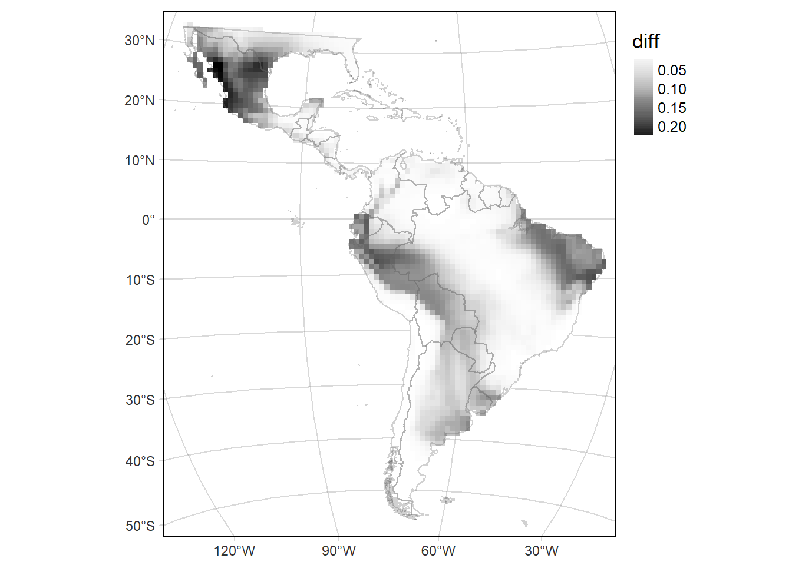
Code
rast.stars <- c(stars::st_as_stars(rast2-rast1), stars::st_as_stars(rast.sd))
names(rast.stars) <- c('diff', 'sd')
par(mfrow=c(2,2))
hist(rast1)
hist(rast2)
hist(rast.stars['diff'])
hist(rast.stars['sd'])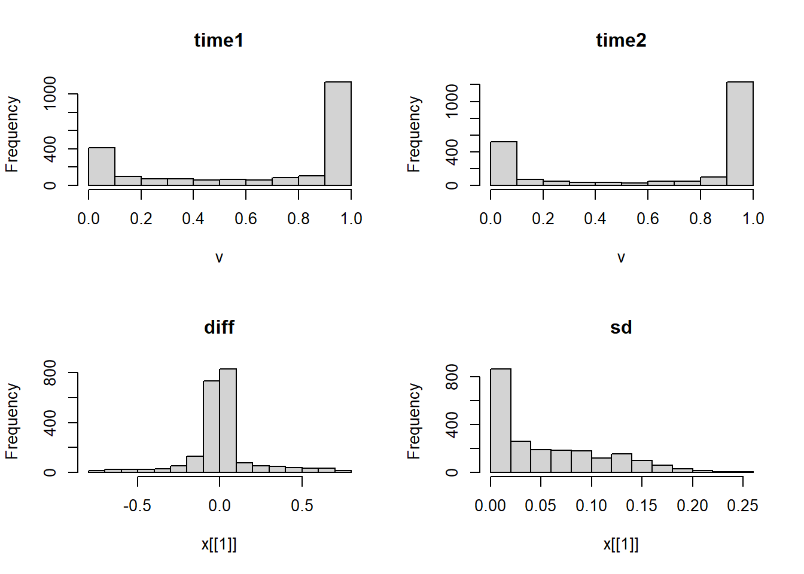
Code
par(mfrow=c(1,1))
add_new_var = function(x, var1, var2, nbins1, nbins2, style1, style2,fixedBreaks1, fixedBreaks2){
class1 = suppressWarnings(findCols(classIntervals(c(x[[var1]]),
n = nbins1,
style = style1,
fixedBreaks1=fixedBreaks1)))
class2 = suppressWarnings(findCols(classIntervals(c(x[[var2]]),
n = nbins2,
style = style2,
fixedBreaks=fixedBreaks2)))
x$new_var = class1 + nbins1 * (class2 - 1)
return(x)
}
rast.bivariate = add_new_var(rast.stars,
var1 = "diff",
var2 = "sd",
nbins1 = 3,
nbins2 = 5,
style1 = "fixed",
fixedBreaks1=c(-1,-0.05, 0.05, 1),
style2 = "fixed",
fixedBreaks2=c(0, 0.05, 0.1, 0.15, 0.2, 0.3))
# See missing classes and update palette
all_classes <- seq(1,15,1)
rast_classes <- as_tibble(rast.bivariate['new_var']) %>%
distinct(new_var) %>% filter(!is.na(new_var)) %>% pull()
absent_classes <- all_classes[!(all_classes %in% rast_classes)]
if (length(absent_classes)==0){
hyagouaroundi.new.pal <- hyagouaroundi.pal
} else hyagouaroundi.new.pal <- hyagouaroundi.pal[-c(absent_classes)]
# Map of the of the change in the probability of occurrence (time2 - time1)
# according to the mean SD of the probability of occurrence (mean(time2.sd, time1.sd))
diffMAP.SD <- tm_graticules(alpha = 0.3) +
tm_shape(rast.bivariate) +
tm_raster("new_var", style= "cat", palette = hyagouaroundi.new.pal) +
tm_shape(Latam_countries) +
tm_borders(col='grey60', alpha = 0.4) +
tm_layout(legend.outside = T, frame.lwd = 0.3, scale=1.2, legend.outside.size = 0.1)
diffMAP.SD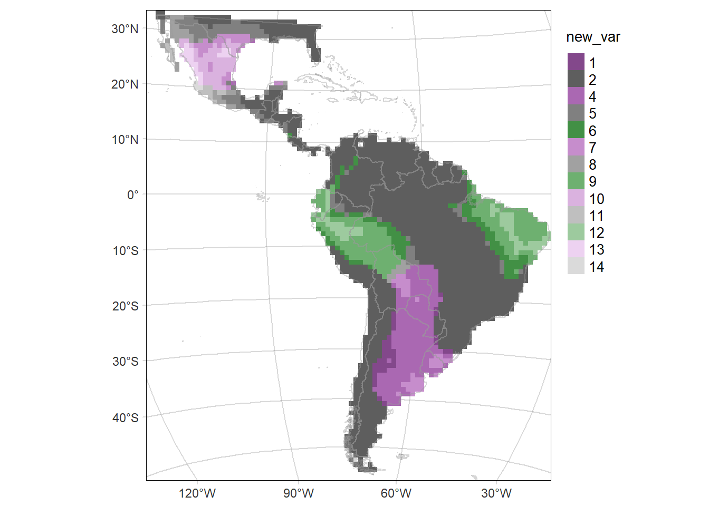
Countries thinning
Code
countryLevels <- cats(Latam.raster.countries)[[1]] #%>% mutate(value=value+1)
rasterLevels <- levels(as.factor(PO_time1_time2$country))
countries <- countryLevels %>% filter(value %in% rasterLevels) %>% mutate(numLevel=1:27)
fitted.model.ggs.alpha <- ggmcmc::ggs(fitted.model.mcmc, family="^alpha")
ci.alpha <- ci(fitted.model.ggs.alpha)
country_acce <- bind_rows(ci.alpha[28,],
tibble(countries, ci.alpha[1:27,])) %>%
dplyr::select(-c(value, numLevel))
#accessibility range for predictions
accessValues <- seq (0,0.5,by=0.01)
#get common steepness
commonSlope <- country_acce$median[country_acce$Parameter=="alpha1"]
#write function to get predictions for a given country
getPreds <- function(country){
#get country intercept
countryIntercept = country_acce$median[country_acce$country==country & !is.na(country_acce$country)]
#return all info
data.frame(country = country,
access = accessValues,
preds= countryIntercept * exp(((-1 * commonSlope)*accessValues)))
}
allPredictions <- country_acce %>%
filter(!is.na(country)) %>%
filter(country %in% Latam_countries$iso_a2) %>%
pull(country) %>%
map_dfr(getPreds)
allPredictions <- left_join(as_tibble(allPredictions),
Latam_countries %>% select(country=iso_a2, name_en) %>%
st_drop_geometry(), by='country') %>%
filter(country!='VG' & country!= 'TT' & country!= 'FK' & country!='AW')
# just for exploration - easier to see which county is doing which
acce_country <- ggplot(allPredictions)+
geom_line(aes(x = access, y = preds, colour = name_en), show.legend = F) +
viridis::scale_color_viridis(option = 'turbo', discrete=TRUE) +
theme_bw() +
facet_wrap(~name_en, ncol = 5) +
ylab("Probability of retention") + xlab("Accessibility")
acce_countryCode
# all countries
acce_allcountries <- ggplot(allPredictions) +
geom_line(aes(x = access, y = preds, colour = name_en), show.legend = F)+
viridis::scale_color_viridis(option = 'turbo', discrete=TRUE) +
theme_bw() +
ylab("Probability of retention") + xlab("Accessibility")
acce_allcountries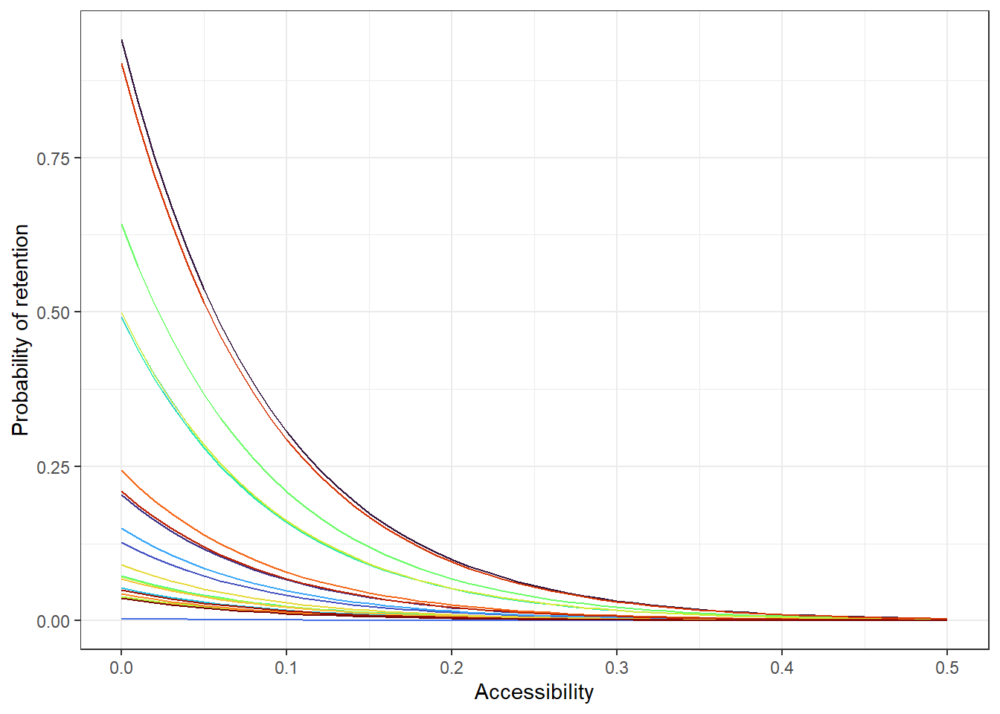
Effect of the environmental covariates on the intensity of the point process
Code
caterpiller.params <- fitted.model.ggs.b %>%
filter(grepl('env', Parameter)) %>%
mutate(Parameter=as.factor(ifelse(Parameter=='env.bio_7', 'temperature annual range',
ifelse(Parameter=='env.elev', 'elevation',
ifelse(Parameter=='env.npp', 'npp',
ifelse(Parameter=='env.bio_15', 'precipitation seasonality', Parameter)))))) %>%
ggs_caterpillar(line=0) +
theme_light() +
labs(y='', x='posterior densities')
caterpiller.params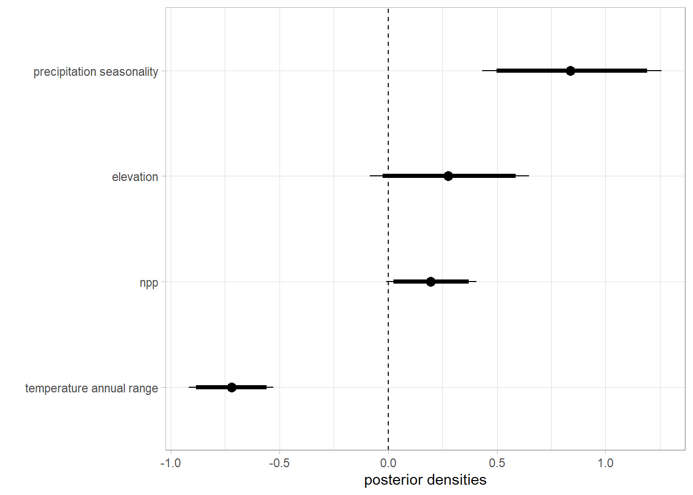
Boxplot of posterior densities of the predicted area in both time periods
Code
fitted.model.ggs.A <- ggmcmc::ggs(fitted.model.mcmc, family="^A")
# CI
ggmcmc::ci(fitted.model.ggs.A)# A tibble: 2 x 6
Parameter low Low median High high
<fct> <dbl> <dbl> <dbl> <dbl> <dbl>
1 A.time1 1345. 1363. 1468. 1595. 1620.
2 A.time2 1374. 1389. 1466. 1572. 1601.Code
fitted.model$BUGSoutput$summary['A.time2',] mean sd 2.5% 25% 50% 75%
1471.225796 55.978202 1374.029993 1433.500081 1466.301794 1502.960374
97.5% Rhat n.eff
1600.546179 1.002875 1000.000000 Code
# fitted.model$BUGSoutput$mean$A.time2
fitted.model$BUGSoutput$summary['A.time1',] mean sd 2.5% 25% 50% 75%
1471.992684 70.107412 1345.042005 1423.015119 1468.291791 1517.268384
97.5% Rhat n.eff
1620.369412 1.002021 1900.000000 Code
# fitted.model$BUGSoutput$mean$A.time1
# boxplot
range.boxplot <- ggs_caterpillar(fitted.model.ggs.A, horizontal=FALSE, ) + theme_light(base_size = 14) +
labs(y='', x='Area (number of 100x100 km grid-cells)')
range.boxplot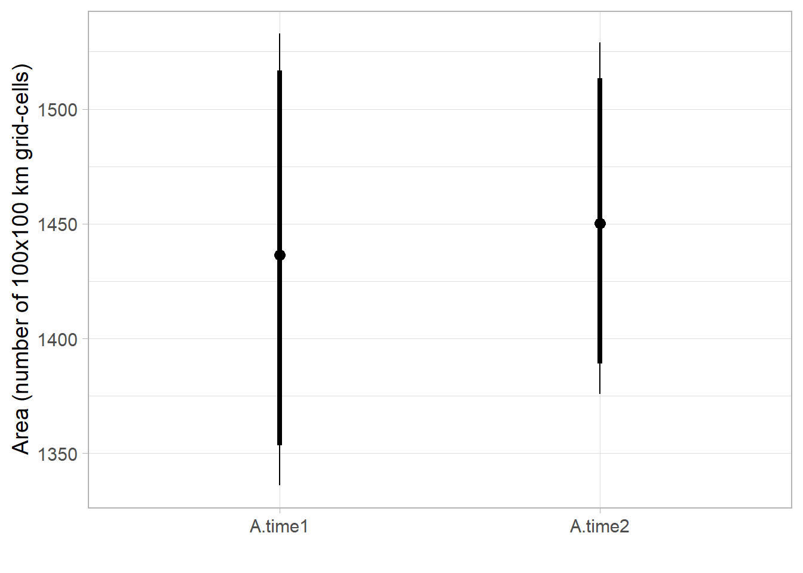
Code
# CI
range.ci <- ggmcmc::ci(fitted.model.ggs.A) %>%
mutate(Parameter = fct_rev(Parameter)) %>%
ggplot(aes(x = Parameter, y = median, ymin = low, ymax = high)) +
geom_boxplot(orientation = 'y', size=1) +
stat_summary(fun=mean, geom="point",
shape=19, size=4, show.legend=FALSE) +
theme_light(base_size = 14) +
labs(x='', y='Area (number of 100x100 km grid-cells)')
range.ciposterior distribution of range change (Area).
Code
fitted.model.ggs.delta.A <- ggmcmc::ggs(fitted.model.mcmc, family="^delta.A")
# CI
ggmcmc::ci(fitted.model.ggs.delta.A)# A tibble: 1 x 6
Parameter low Low median High high
<fct> <dbl> <dbl> <dbl> <dbl> <dbl>
1 delta.A -75.3 -62.2 1.84 51.3 59.9Code
fitted.model$BUGSoutput$summary['delta.A',] mean sd 2.5% 25% 50%
-0.7668883 34.3911455 -75.3458113 -22.2300048 1.8396190
75% 97.5% Rhat n.eff
22.9076560 59.8833408 1.0009800 27000.0000000 Code
#densitiy
delta.A.plot <- fitted.model.ggs.delta.A %>% group_by(Iteration) %>%
summarise(area=median(value)) %>%
ggplot(aes(area)) +
geom_density(col='grey30', fill='black', alpha = 0.3, size=1) +
scale_y_continuous(breaks=c(0,0.0025,0.005, 0.0075, 0.01, 0.0125)) +
geom_abline(intercept = 0, slope=1, linetype=2, size=1) +
# vertical lines at 95% CI
stat_boxplot(geom = "vline", aes(xintercept = ..xmax..), size=0.5, col='red') +
stat_boxplot(geom = "vline", aes(xintercept = ..xmiddle..), size=0.5, col='red') +
stat_boxplot(geom = "vline", aes(xintercept = ..xmin..), size=0.5, col='red') +
theme_light(base_size = 14, base_line_size = 0.2) +
labs(y='Probability density', x=expression(Delta*'Area'))
delta.A.plot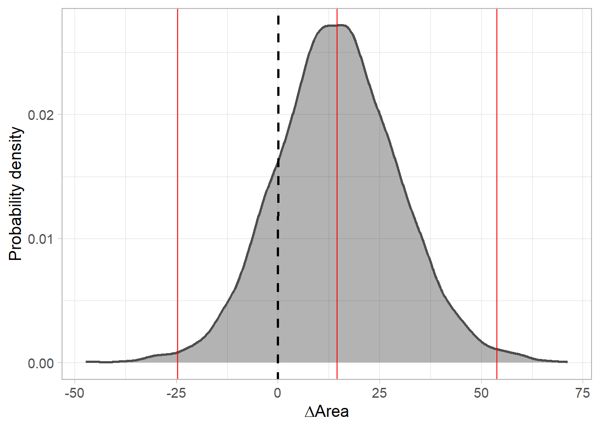
posterior predictive checks
PO
Expected vs observed
Code
counts <- PO_time1_time2$count
counts.new <- fitted.model$BUGSoutput$mean$y.PO.new
lambda <- fitted.model$BUGSoutput$mean$lambda
pred.PO <- data.frame(counts, counts.new, lambda)
# fitted.model$BUGSoutput$summary['fit.PO',]
# fitted.model$BUGSoutput$summary['fit.PO.new',]
pp.PO <- ggplot(pred.PO, aes(x=counts, y=lambda), fill=NA) +
geom_point(size=3, shape=21) +
xlim(c(0, 100)) +
ylim(c(0, 50)) +
labs(x='observed', y=expression(lambda), title='Presence-only') +
geom_abline(col='red') +
theme_bw()
pp.PO.log10 <- ggplot(pred.PO, aes(x=counts, y=lambda), fill=NA) +
geom_point(size=3, shape=21) +
scale_x_log10(limits=c(0.01, 100)) +
scale_y_log10(limits=c(0.01, 100)) +
coord_fixed(ratio=1) +
labs(x='observed (log scale)', y=expression(lambda*'(log scale)'), title='log10 scale') +
geom_abline(col='red') +
theme_bw()
pp.PO | pp.PO.log10Residual Diagnostics
Code
library(DHARMa)
simulations <- fitted.model$BUGSoutput$sims.list$y.PO.new
pred <- apply(fitted.model$BUGSoutput$sims.list$lambda, 2, median)
#dim(simulations)
sim <- createDHARMa(simulatedResponse = t(simulations),
observedResponse = PO_time1_time2$count,
fittedPredictedResponse = pred,
integerResponse = T)
plotSimulatedResiduals(sim)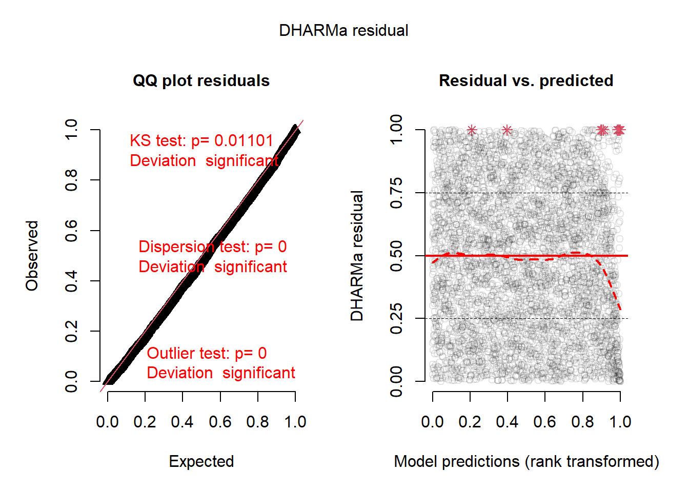
Grid-level change
Code
range_change <- as_tibble(rast2[PO_time2$pixel] - rast1[PO_time2$pixel]) %>% rename(range=time2)
numRecord_change <- as_tibble(PO_time2$count - PO_time1$count) %>% rename(numRecord=value)
grid.level.change <- bind_cols(range_change, numRecord_change) %>%
mutate(nonzero=ifelse(numRecord==0, '0', '>=1')) %>%
ggplot() +
geom_point(aes(y=range, x=numRecord, col=nonzero), size=1) +
geom_vline(xintercept=0, linetype=2, size=0.5) +
geom_hline(yintercept=0, linetype=2, size=0.5) +
labs(y = expression('Predicted grid-level range change (Ppred'['time2']*'-Ppred'['time1']*')'),
x= expression('Grid-level range change in number of records (Nrecords'['time2']*'-Nrecords'['time1']*')'),
col = 'Number of records\nper grid cell') +
theme_bw(base_size = 14)
grid.level.change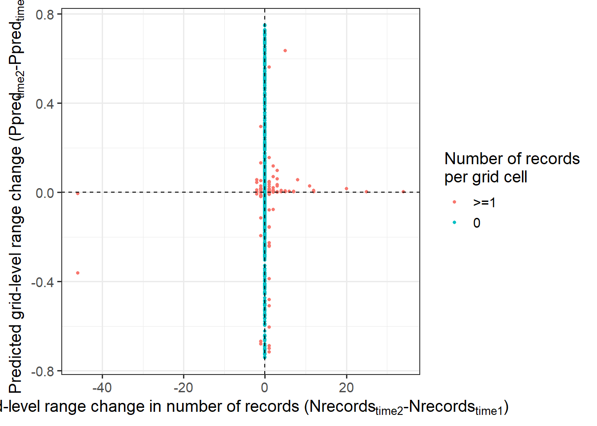
PA
Tjur R2
Code
presabs <- PA_time1_time2$presabs
psi <- fitted.model$BUGSoutput$mean$psi
pred.PA <- data.frame(presabs, psi)
r2_tjur <- round(fitted.model$BUGSoutput$mean$r2_tjur, 3)
fitted.model$BUGSoutput$summary['r2_tjur',] mean sd 2.5% 25% 50%
0.34439230 0.01358508 0.31955755 0.33585535 0.34362105
75% 97.5% Rhat n.eff
0.35199851 0.37615980 1.00193947 2000.00000000 Code
pp.PA <- ggplot(pred.PA, aes(x=presabs, y=psi, col=presabs)) +
geom_jitter(height = 0, width = .05, size=1) +
scale_x_continuous(breaks=seq(0,1,0.25)) + scale_colour_binned() +
labs(x='observed', y=expression(psi), title='Presence-absence') +
stat_summary(
fun = mean,
geom = "errorbar",
aes(ymax = ..y.., ymin = ..y..),
width = 0.2, size=2) +
theme_bw() + theme(legend.position = 'none')+
annotate(geom="text", x=0.5, y=0.5,
label=paste('Tjur R-squared = ', r2_tjur))
pp.PA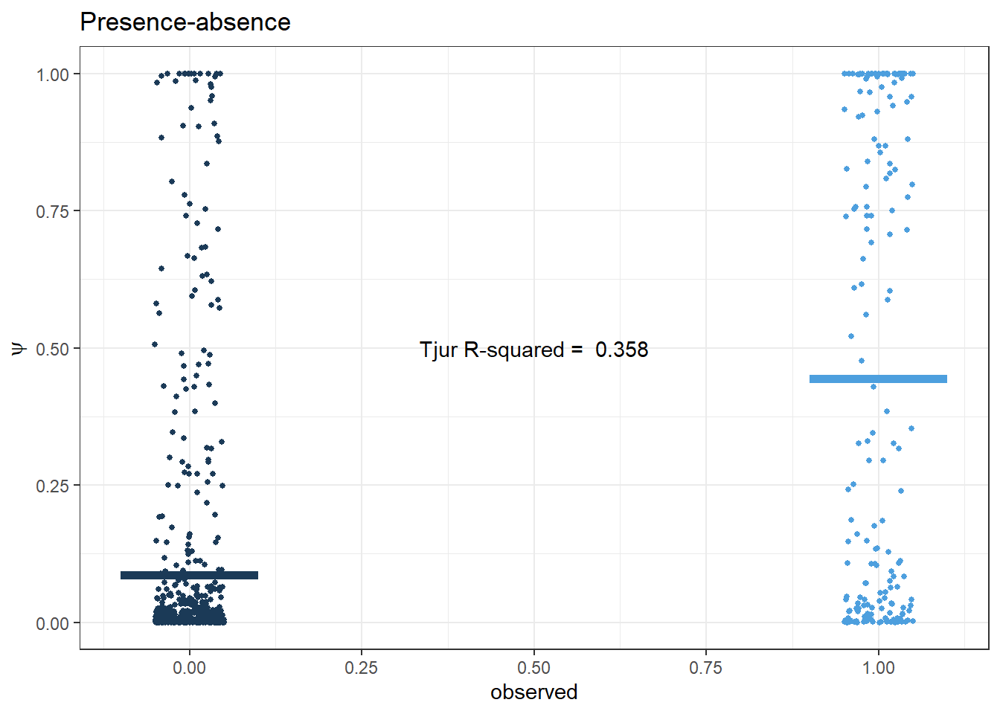
AUC
Code
auc.sens.fpr <- bind_cols(sens=fitted.model$BUGSoutput$mean$sens,
fpr=fitted.model$BUGSoutput$mean$fpr)
auc.value <- round(fitted.model$BUGSoutput$mean$auc, 3)
ggplot(auc.sens.fpr, aes(fpr, sens)) +
geom_line() + geom_point() +
labs(x='1 - Specificity', y='Sensitivity') +
annotate(geom="text", x=0.5, y=0.5,
label=paste('AUC = ', auc.value)) +
theme_bw()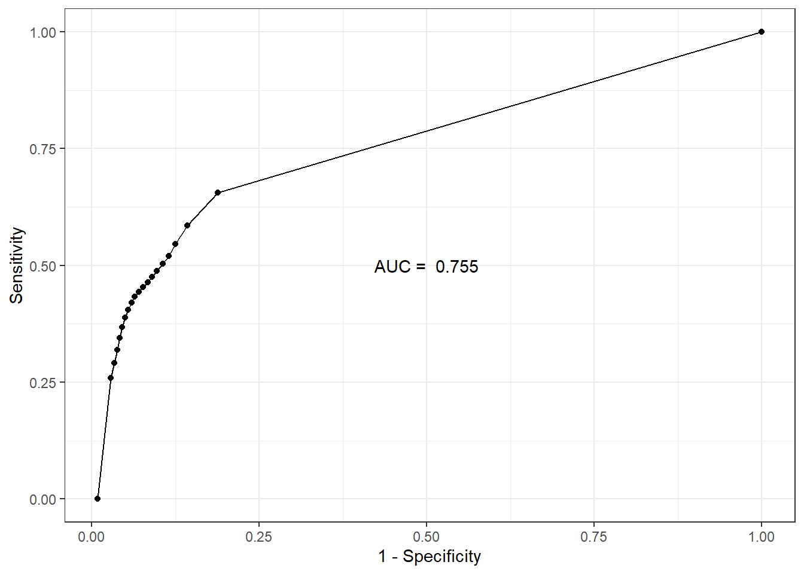
Code
fitted.model$BUGSoutput$summary['auc',] mean sd 2.5% 25% 50%
0.74774447 0.00591763 0.73678107 0.74393320 0.74736317
75% 97.5% Rhat n.eff
0.75124387 0.76073648 1.00109140 13000.00000000